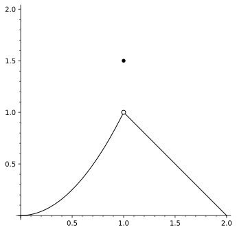
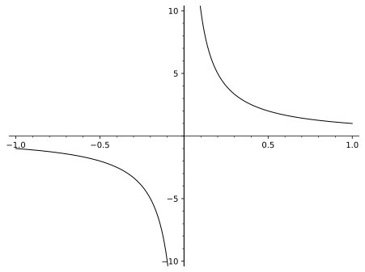

Section 2.1 Definition
Consider ...

Which, for the record, happens to be the graph of the following function
\begin{equation*}
f(x) = \left\{ \begin{array}{cc}
x^2 \amp 0 \le x \lt 1 \\
1.5 \amp x=1 \\
2-x \amp 1 \lt x \le 2
\end{array}
\right.
\end{equation*}
Using the limit notation developed to this point, we notice that \(\displaystyle \lim_{x\to 1}f(x)=1\text{.}\) As it happens for this function though, we notice that this does not match the value of \(f(1)=1.5\text{.}\) That is, for this particular function at the domain value \(x=1\text{,}\) we have
\begin{gather*}
\displaystyle \lim_{x\to 1}f(x) \ne f(1)
\end{gather*}
Visually (i.e. looking at the graph of \(f\)), this shows up as some sort of "break" in the graph of \(f\) at \(x=1\text{.}\) In such cases, we say that \(f\) has a "discontinuity" at \(x=1\text{.}\) Precisely, we have
It is worth noting here that some discontinuities are "removable" and some are not. Consider \(f(x)=1/x\text{.}\) This familiar function has the graph

At \(x=0\text{,}\) this function has no limit of any kind (and isn’t even defined) at \(0\text{.}\) Even worse, if we chose to define a function that was \(1/x\) for all \(x\ne 0\) and set it to be *something* at \(0\text{,}\) there is nothing we could set it to in order to make it continuous since \(1/x\) has no limit at \(0\text{.}\) So, this discontinuity at \(0\) is quite bad.
On the other hand, looking at the graph at the start of the section, if we had just defined that function to be \(f(1)=1\) instead of \(f(1)=1.5\text{,}\) then \(f\) would have been continuous at \(1\) and, as apparent from the graph, everywhere else between \(x=0\) and \(x=2\text{.}\) Such discontinuities are often called "removable". So, we’d say that for the function at the start of the section, the discontinuity at \(x=1\) is "removable".